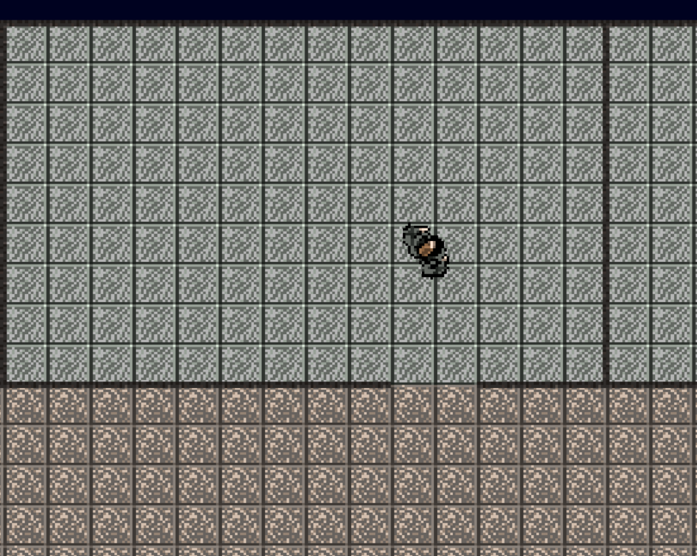
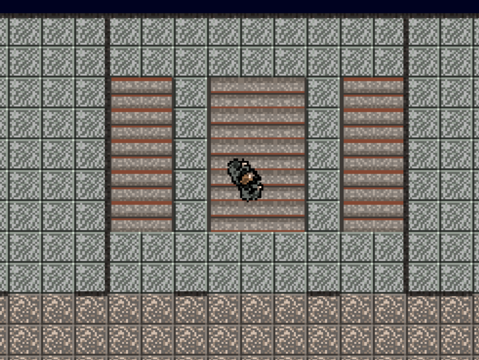
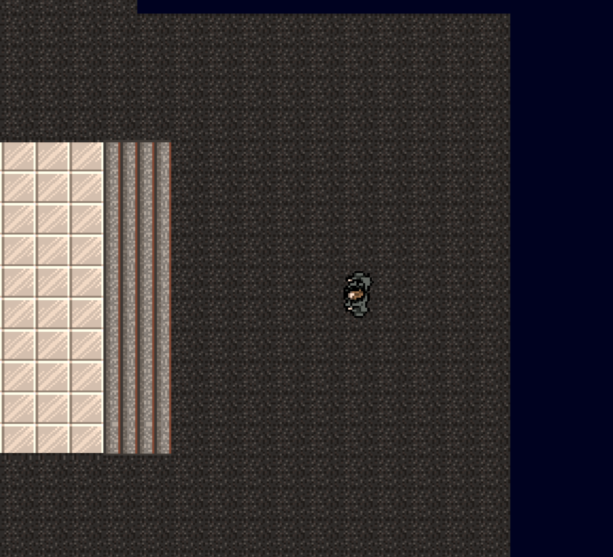
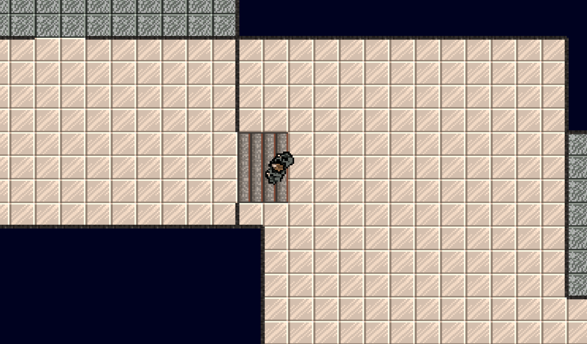
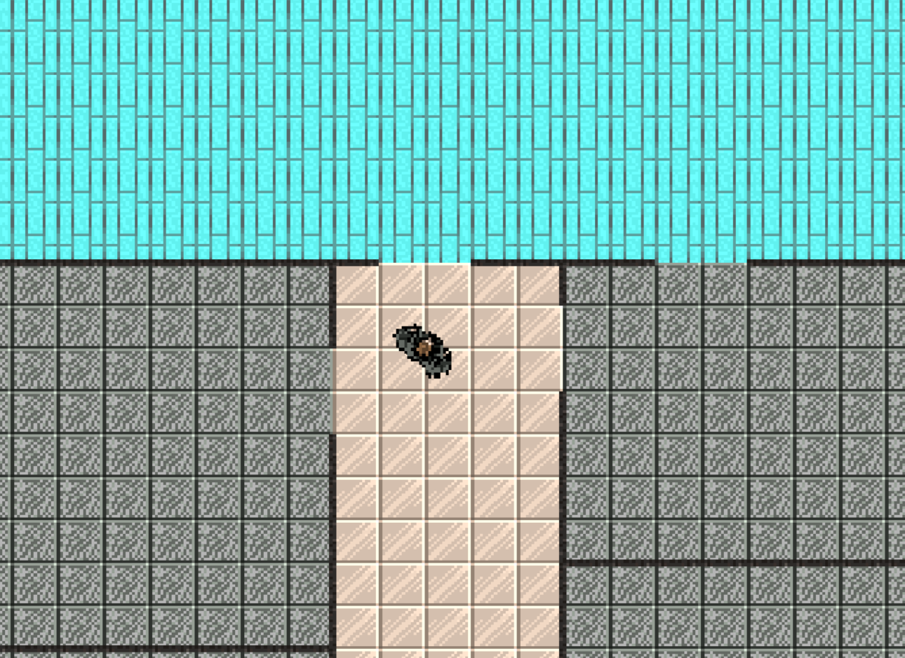

Что нужно делать в игре?
Исследование локации
Исследовать колледж, чтобы найти выход. Это включает в себя поиск различных путей и коридоров.
Ориентирование в пространстве
Пользователь должен после изучения локации спокойно ориентироваться в пространстве, не путая ходы и коридоры.
Поиск безопасных выходов
Осмотреть локацию и найти более безопасные выходы при возникновении ЧС.
Фото локаций
Локации созданы на основе планов эвакуации нашего колледжа





Зачем нужна наша игра
Игра предоставляет возможность игрокам научиться основам искать безопасные выходы при пожарах, землетрясениях, и тд. Это может быть особенно полезно для подростков и молодых взрослых, которые могут столкнуться с подобными ситуациями в реальной жизни.
Обучение навыкам
Игра требует от игроков стратегического мышления и принятия быстрых решений в условиях стресса. Это помогает развивать у них навыки планирования, анализа ситуации и принятия решений в реальном времени.
Развитие стратегического мышления
Игра может помочь повысить осведомленность об аварийной подготовке и важности знания процедур эвакуации. Она может стимулировать игроков задуматься о том, как они будут действовать в случае чрезвычайной ситуации, и может подтолкнуть их к изучению соответствующих рекомендаций и инструкций.
Повышение осведомленности об аварийной подготовке